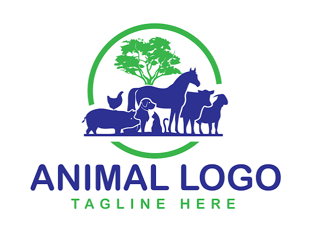
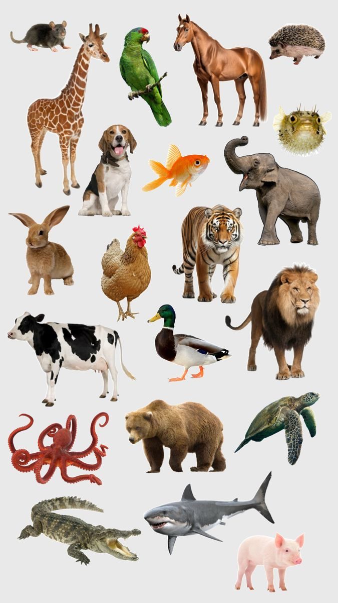
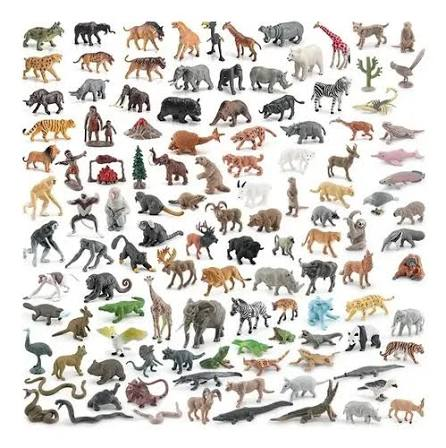
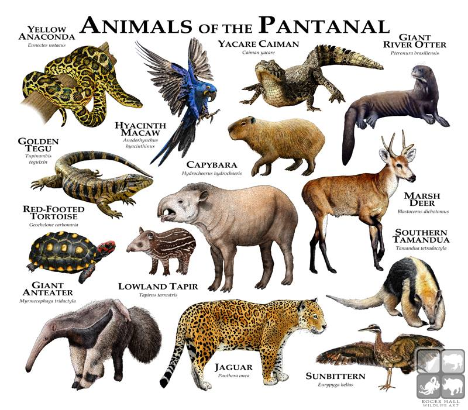
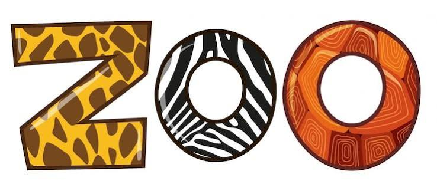
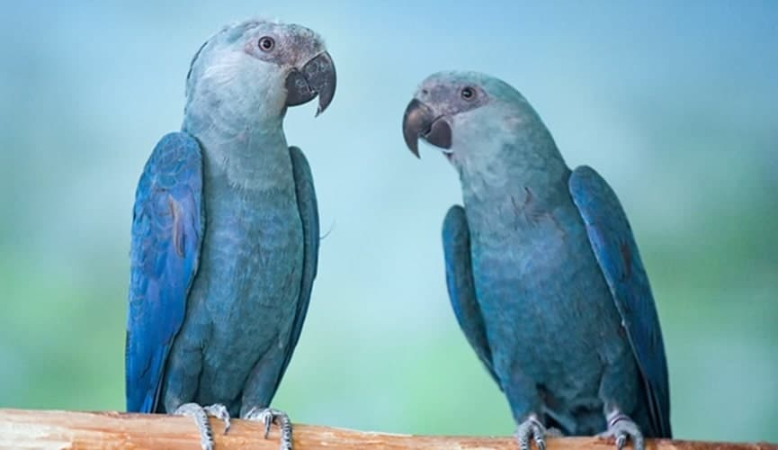
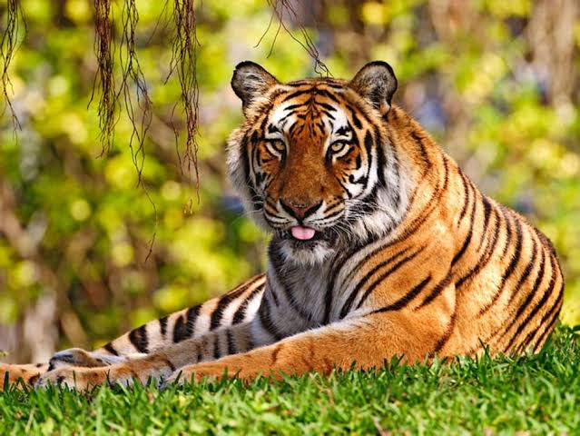

ANIMAIS


Os animais são seres vivos que pertencem ao reino Animalia. Eles são caracterizados por sua capacidade de se mover, responder a estímulos e consumir outros organismos para obter energia, incluindo os próprios seres humanos.
O reino Animalia é dividido em vários filos, como os cordados, artrópodes, moluscos e outros. Cada filo possui características distintas, como a presença de coluna vertebral nos cordados ou a exoesqueleto nos artrópodes. Um filo é um conjunto de classes de organismos que compartilham características estruturais e evolutivas semelhantes. Cada classe dentro de um filo possui características específicas que a diferenciam das outras classes, e uma classe é composta por ordens. Cada ordem é composta por famílias, que por sua vez são compostas por gêneros, e cada gênero é composto por espécies, assim como cada indivíduo de uma espécie possui características únicas, como cor, tamanho e comportamento, que o diferenciam dos outros indivíduos da mesma espécie.
Os animais podem ser classificados em diferentes tipos com base em suas características e comportamentos. Alguns exemplos de tipos de animais incluem:
Os animais podem ser encontrados em uma variedade de habitats ao redor do mundo, desde florestas tropicais e desertos áridos até oceanos profundos e regiões polares geladas. Cada espécie de animal tem adaptações específicas que lhes permitem sobreviver em seu ambiente natural. Por exemplo, animais que vivem em regiões frias podem ter pelagem espessa para se manter aquecidos, enquanto animais que vivem em desertos podem ter adaptações para conservar água.
Cada um deles se adapta de maneira única ao seu ambiente, permitindo que sobrevivam em condições, portanto, diversificadas.

Os zoológicos são uma forma de aproximarem as pessoas do contato visual com animais de diferentes lugares do mundo, trazendo uma vida superficial sobre eles. Animais em condição de cuidados em zoológicos podem receber alimentação adequada, cuidados veterinários e ausência das ameaças predatórias naturalmente. Apesar do zoológico não ser bem visto por todos, ele é, de certa forma, uma da mais eficientes formas de preservação de espécies ameaçadas de extinção, além de ser um local de pesquisa científica e educação ambiental.

A ararinha azul é uma espécie de papagaio endêmica do Brasil, conhecida por sua plumagem azul vibrante e comportamento social. Desde os anos 2000, a ararinha azul foi considerada extinta na natureza devido à destruição de seu habitat e à captura ilegal para o comércio de animais de estimação, existindo apenas 315 indivíduos, todos encontrados no Zoológico de São Paulo. A espécie se tornou um símbolo da conservação da biodiversidade e dos esforços para proteger espécies ameaçadas de extinção.

Considerado o tigre mais raro do mundo, o tigre-da-china-do-sul é uma subespécie de tigre que habitava as florestas da China e da Coreia do Sul. Atuamente, um pouco mais de 200 indivíduos ainda vivem em cativeiro, pois sua espécie deixou de existir livremente pelo mundo desde os anos 70, devido a caça ilegal e à destruição de seu habitat natural durante muitos anos. Ainda reside em alguns zoológicos, como o Zoológico de Xangai(Shanghai Zoo) pelo parque de wangcheng (WangCheng Park) na China.